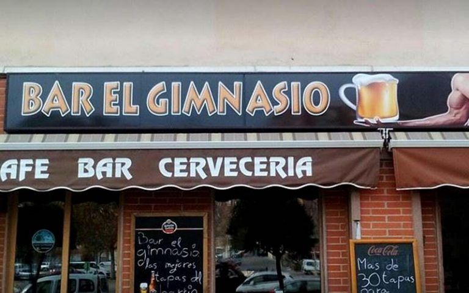

Nuestro Restaurante

Cualquier cosa usted fue al Gimnasio.
Carta
Carta comida
| Plato | Descripción | Precio |
|---|---|---|
| Hamburguesa Completa | Hamburguesa con queso, tomate y lechuga. | 9,50 € |
| Pechuga a la Plancha | Pechuga de pollo con ensalada fresca. | 10,50 € |
| Pasta Boloñesa | Pasta con salsa de tomate y carne. | 8,90 € |
| Pizza Margarita | Pizza de mozzarella y tomate. | 11,00 € |
| Sándwich Fitness | Pan integral con pollo y vegetales. | 7,80 € |
Carta Bebidas
| Bebida | Descripción | Precio |
|---|---|---|
| Zumo de Cebada | Bebida isotónica elaborada mediante un avanzado proceso de fermentación deportiva. | 2,50 € |
| Zumo de Cebada + Shot de Limón | Versión cítrica de nuestro zumo estrella, ideal para quienes cuentan las calorías del segundo vaso. | 3,00 € |
| Batido de Uva Madurada en Barrica | Preparado antioxidante de color tinto que mejora las conversaciones y las sobremesas. | 3,50 € |
Carta Postres
| Postre | Descripción | Precio |
|---|---|---|
| Tarta de Queso | Tarta casera con mermelada de frutos rojos. | 4,50 € |
| Helado Artesanal | Dos bolas de helado a elección. | 3,50 € |
| Brownie de Chocolate | Brownie acompañado de helado de vainilla. | 4,80 € |